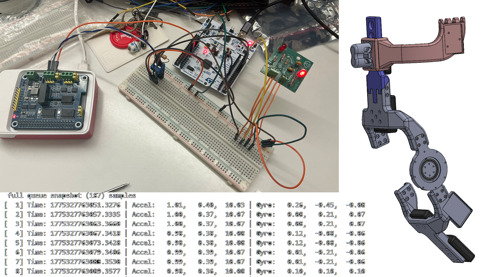

exoskeleton
team projectSensor to actuator. Firmware for a lower-limb exoskeleton.
C / STM32 / CAN / DMA
DetailsLess about Exoskeleton
- I developed CAN firmware linking a Raspberry Pi 5 and four STM32 controllers over a 1 Mbit/s bus.
- For IMU acquisition, I increased the I²C clock from 100 to 400 kHz and implemented DMA reads with interrupt-driven completion.
